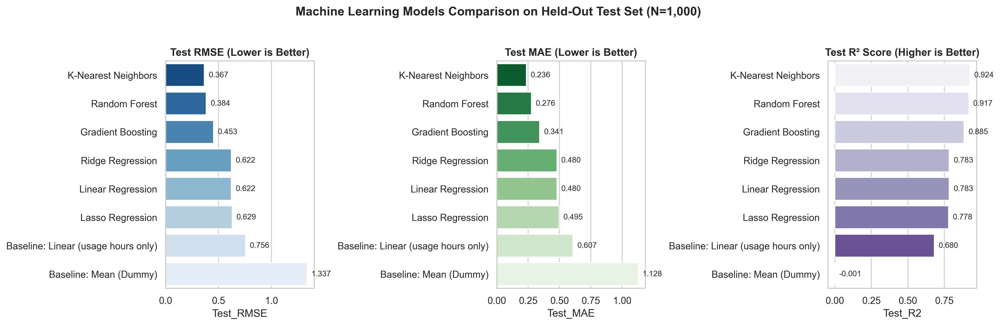
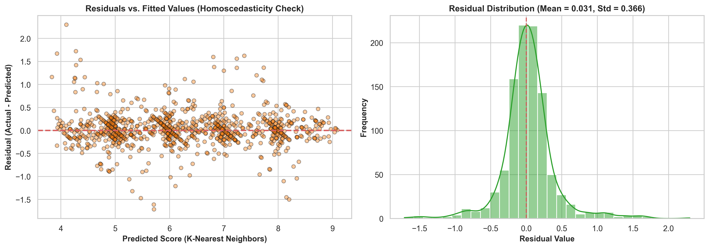
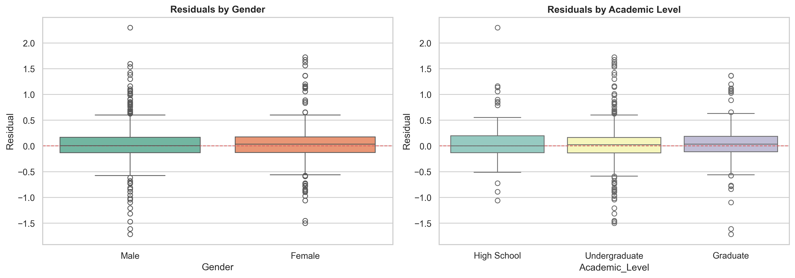
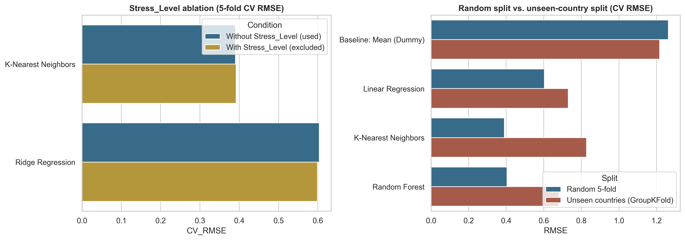

ES 335 · Machine Learning · Aryan Mangal (25110058)
Can daily habits predict a student's self-reported mental-health score?
Loading results…
All numbers on this page are generated by src/export_site.py from the saved pipeline outputs. None are typed in by hand.
1 Problem and scope
- Unit of analysis
- One row = one student's survey response (one point in time).
- Target
Mental_Health_Score, continuous, treated as regression. Observed range 3.6–9.4.- Prediction-time information
- Only habits and demographics a student could report before any wellbeing assessment.
Stress_Levelis excluded because it is measured at the same time as the outcome and would not be known when predicting it. - Success criterion
- Clearly lower RMSE than (a) predicting the mean and (b) a linear model, with the gap supported by a paired bootstrap on the test set.
- What we do not claim
- No causal effects ("sleeping more raises your score"), no clinical use, no claim about students outside this dataset's population, and no claim that the score measures clinical mental health.
2 Data
Source. Shiva Singh, Student Social Media & Mental Health Impact, Kaggle (2024),
kaggle.com/datasets/shivasingh4945.
A public CSV with no login or credentials needed. It is stored in data/dataset.csv, byte-identical to the original download.
Access limits. The Kaggle page does not document how, when or where responses were collected, how the score was measured, or whether the rows are real or simulated. Some patterns (very strong, smooth correlations; platform almost fixing purpose) look more like generated data than a real survey. Every conclusion below is therefore about this dataset, not about students in general.
Variables
Categorical: Gender (2), Country (), Academic_Level (3), Most_Used_Platform (12), Purpose_Of_Use (4), Stress_Level (4, excluded).
Quality checks
Orange bars: bottom 25% of training scores (below ). The target is roughly symmetric, so no transformation is needed.
Stress_Level is excluded: mean score by stress levelStress is measured at the same time as the outcome and moves with it, so it would not be known at prediction time.
How each input relates to the score
Blue = higher input goes with a higher score, orange = lower. Correlation is not causation.
Small platforms (n < 60) give noisy means. Platform also mostly fixes purpose.
3 Preprocessing and method choice
Cleaning (before the split, rule-based, nothing learned)
- Removed exact duplicate rows, so a row cannot appear in both train and test.
- Clipped negative exercise values (−0.1 to −0.4 h) to 0, because negative time is impossible.
- No imputation needed (0 missing values). No outlier removal, because every value is plausible.
Learned preprocessing (inside the pipeline)
StandardScaleron the 6 numeric inputs. Needed for KNN and penalised linear models, whose distances and penalties depend on scale. Trees get raw values.OneHotEncoder(handle_unknown="ignore")on the 5 categorical inputs. Unseen countries become an all-zero vector, so the pipeline does not crash on them.- Both steps are inside a scikit-learn
Pipeline, so they are re-fit on each training fold only. Test rows never shape the means, scales or categories.
Baselines and candidates
Objective: all models minimise squared error, matching the RMSE we report. Hyper-parameter grids are listed in src/train.py.
4 Evaluation design
- Tuning vs. testing.
GridSearchCVpicks hyper-parameters on the training folds. The final model is the one with the lowest mean CV RMSE. Test scores are reported for every model but never used to choose one. - Why RMSE. The score is continuous and large misses matter more than small ones, so RMSE is the primary metric. MAE gives the typical miss in score points, and R² compares against predicting the mean.
- Uncertainty. 95% bootstrap CIs (1,000 resamples of the test set). Model gaps use a paired bootstrap: the same resampled rows for both models.
- Unseen-country check.
GroupKFoldby country on the training set, so whole countries are held out together. This tests the second half of the question without touching the test set.
Training folds only. Small k with distance weighting wins, so the score depends on very local similarity.
5 Results
ΔRMSE = how much worse the model is than the selected model on the same bootstrapped test rows (95% CI). A CI that includes 0 means no clear difference.
Does it work for unseen countries?
Which inputs carry the signal?
5-fold CV RMSE on the training set, KNN with the selected hyper-parameters, and Ridge.
Stress_Level ablation
6 Errors, uncertainty and limitations
Positive = over-predicted. Low scorers are pushed up and high scorers down.
Largest test-set misses
Limitations
7 Try the model
The saved KNN model runs in your browser. It uses the same scaler, categories and training rows as models/best_model.joblib,
so it gives the same predictions as the Python model. A real held-out test student shows how wrong it can be.
Nearest training students used
What-if (model sensitivity, not advice)
Changes show how the model's output responds. They are not causal effects. KNN moves in steps: its output changes only when the set of nearest neighbours changes. This is not a clinical tool.
8 Reproduce
git clone https://github.com/Aryan7280/mental-health-score-predictor.git
cd mental-health-score-predictor
pip install -r requirements.txt
python src/train.py # split, CV tuning, selection, test metrics, ablations, error analysis
python src/evaluate.py # figures in reports/figures/
python src/export_site.py # regenerates docs/data.js for this page
pytest tests/- Fixed seed 42 for the split, CV folds, bootstraps and models. Cleaning rules are in
src/preprocessing.py. - Outputs:
reports/model_comparison.csv,country_generalization.csv,ablation_study.csv,feature_group_ablation.csv,subgroup_errors.csv,worst_errors.csv,permutation_importance.csv. - The data is public, and no credentials or personal identifiers are used. The browser predictor sends nothing anywhere.
Static figures from src/evaluate.py




